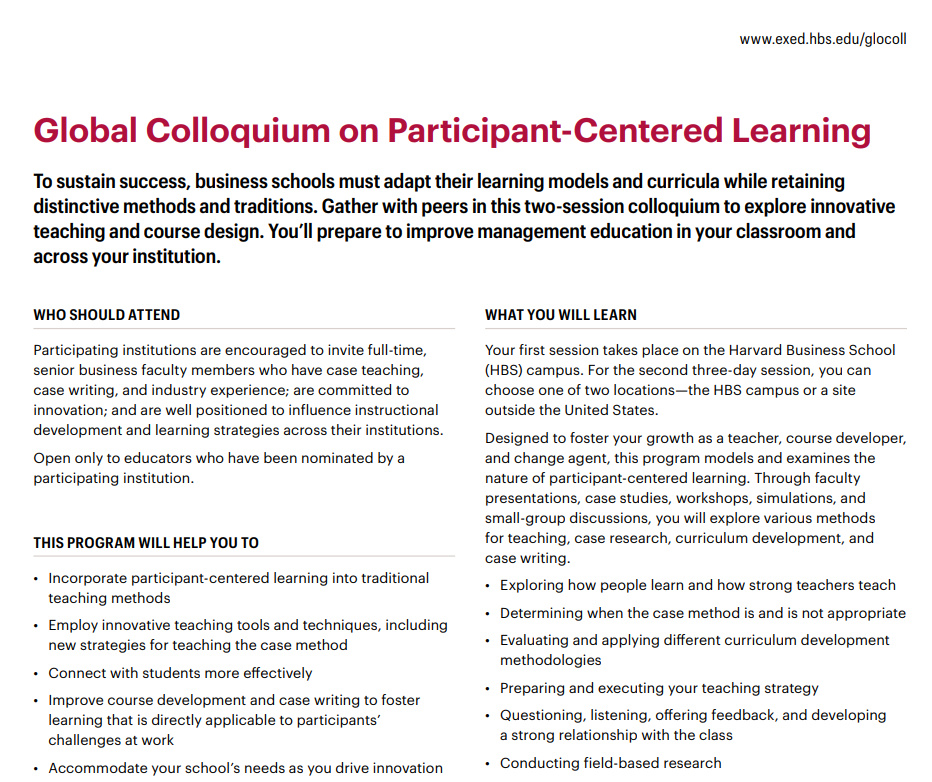

Estudos de Casos Quantitativos
Escrita e Aplicação
2024-03-19
Before anything, let’s align expectations
Descrição:
Esse workshop discute o método do caso de ensino como instrumento pedagógico de ensino centrado no participante.
Serão discutidos os principais temas apresentados no Global Colloquium on Participant-Centered Learning e Case Writing Workshop (Harvard Business School, 2023-24).
O encontro focará 1) nas vantagens e benefícios do uso do caso de ensino em sala de aula e 2) em possíveis estratégias de introdução de casos de ensino quantitativos em disciplinas de graduação.
Ao final da formação, espera-se que os(as) participantes(as) consigam 1) elaborar planos de ensino para uso de casos quantitativos, e 2) compreender as principais etapas e planejar a escrita de um caso de ensino.
Glocoll Participant-Centered Learning

Glocoll Participant-Centered Learning
Two parts:
Global Colloquium on Participant-Centered Learning
Case writing workshop
Case study is the main theme of the course, but not the only theme.
- Participant-Centered Learning is a broader concept (includes many possible different interactions with students, a variety of engaging-type strategies).
Glocoll Participant-Centered Learning
A case study is not something that should have an answer …
… rather, it is a story, it is like a corporate myth (my analogy).
- The story is context-specific, but the dilemma, the decision is atemporal.
A Framework for case writing & teaching
A Framework for case writing & teaching
This is not a prescriptive framework.
- You probably know of many examples that do not adhere to this framework.
This serves as guidance that you may need to tailor to fit your course and students’ profiles
In the next few slides, I’ll discuss some concepts or ‘best practices’ for writing and teaching a case
Remember that HBS does not have undergrad courses. Cases are originally targeted to MBA students.
They write the case for a specific course
The ideal situation is to write the case for a specific course
- The case is tailored to the needs of the course.
- The most usual situation is that one writes the case when the opportunity arrives.
- A case is often leveraged on the relationship with a previous student.
It is an individual decision
The case is always about one person having to make a decision, a protagonist.
- One C-level person.
- One main investor.
- One main actor in the supply chain.
- One main character of a decision-making process.
- Etc.
- Hardly is about a collection of people, i.e., investors or customers
- It is not practical to teach in a classroom how many people should make a decision.
My take I : This is at the core of the Participant-Centered Learning concept. Descriptive cases are nice, but descriptions are not the main thing in the case method.
My take II: Additionally, it helps justifying “old cases”. Stories are context-specific, but decisions are ‘atemporal’.
The (main) decision is always clear in the case
The main decision is usually (but not always) stated as a question in the last paragraph of the main text.
- But this does not mean that the posed question is the only decision in the case.
- A good case involves more than one (but not too many) different decisions.
- The secondary decisions should be discovered during the case resolution.
Example: the HR implications of a startup’s investment project. How one finds and keeps the ‘right’ people for the job?
My take: the secondary decisions are usually a “surprise” for the students. The students may remember and learn more from the secondary decisions.
It needs friction
The sessions always start with a yes/no, advantages/disadvantages, pros/cons type of question.
- The decision needs to have ‘a lot at stake’. The decision-making process (and subsequent learning) inevitably involves friction.
- There’s nothing to learn without friction.
The sessions always start with a yes/no, advantages/disadvantages, pros/cons type of question.
- Instructors always use the board. They rarely use slides.
- Slides are used only when they want to lecture about a quantitative/operational topic.
- It may take one full class. But the next class goes back to a case (to apply the topic learned).
My take: the hardest part is to have an audience that knows this structure. Students should read before the class, not usual in Br.
It needs friction
It needs drama
Often, the decision-maker is:
- “Flying to a board meeting still not knowing what to do.”
- “Driving home thinking about tomorrow’s 8 am meeting.”
- “Arriving at a meeting thinking about the new perspective they just thought of.”
The goal here is to have students put themselves in the protagonist’s shoes.
It is a good story, but this is not enough
While a good case is always a good story, the reverse is not necessarily true.
- As a case writer, it is crucial to differentiate between a good story and a good case.
- A good case teaches us something, which may not always be the case with a good story.
- The something can vary but is always related to the friction.
- This is why I previously used the concept of ‘like a myth’.
If the case can be multimedia, so be it
If possible, you can explore many forms of media.
- Newspapers (often)
- Videos, interviews, podcasts, etc.
- Corporate documents (if available)
- Etc.
Potential decisions based on Theory
The problem of the protagonist should have alternatives. They must both be potentially based on theory.
- The students may not always be familiar with the theory beforehand.
- In such situations, it is a good opportunity to briefly discuss the theory (but ensuring the session doesn’t become a lecture on the theory).
Pastures
Pastures
The case has 2 to 4 pastures.
- During a session, instructors rarely give the “answer” of a pasture…
- … but they conduct quite clearly the movement between pastures.
- You need to plan time, but, more importantly, you need to plan the transitions.
- The pastures should be trivial to the instructor in the main text (at least in the teaching notes). It might not be that clear to an expert student. It almost never clear to a beginner.
My take: As a instructor (that knows the theory and how often things are done), it is hard to stay too long in a pasture. It seems a waste of time.
- But in a trilling group/session, staying in a pasture almost always teach us something about a new perspective.
A good case has clear learning objectives
A case needs clear learning objectives
- Each pasture has its own learning objective.
- The same case can be taught in various ways to accommodate different learning objectives based on the audience or course
- Managing students expectations very early on is crucial.
- If students don’t prepare, the pastures get mixed, which results in the learning objectives not being fulfilled.
A pasture has 1 or more takeaways.
- Takeaway is a definitive statement (not a question) about a lesson that is
- Important.
- New/surprising.
- Conflict are the best takeaways.
- Takeaways and learning objectives are audience-specific.
My take: That is why we should always start with the learning objectives, only then we write the case.
A good case has clear timeline
The sequence of events must be clear to students.
- As all good story, a good case contains a sequence of events.
- Again, students are not expected to bring information outside the case.
- The instructor needs to control the flow of information/discussion. This is only possible with a clear timeline of the events.
There is a natural tradeoff here: details vs. brevity.
Teaching plan comes before the writing
How to develop a case?
1) Idea (or opportunity)
2) Teaching Plan & Learning objectives
3) Protagonist interview (often only one, but it is possible to have more than one)
4) Teaching & Teaching notes
5) Improve Teaching notes
How to cope with the main “issues” of teaching with cases?
How to cope with the main “issues”?
Undergraduate courses:
- Cases are shorter.
- Pastures are more clearly defined. Students do not have enough background to discuss too long in a pasture. Takeaways should be simpler and more generic.
- Teaching plan is the most important part, it may involve a lecture within
- “Sandwich case”
- Case
- Lecture
- Case
- “Sandwich case”
- Always focus on the decision, not the story.
- Ideally, one writes a large case in sections, and use only one in a given session.
- A case involving all topics of a discipline is hard to write but not impossible.
- Maybe, you write the case, the develop the discipline.
How to cope with the main “issues”?
Students may say, ‘I am frustrated because the case has no solution.’
- More common in undergrad students. Usually, students demand the “right” answer.
- But the idea is there is no right answer in a good dilemma.
They don’t want concepts, they want solved problems.
- It might be a generational thing.
- The tip is to go back to the fundamentals of making a decision.
- If you were in the protagonist’s shoes, what would you do?
How to cope with the main “issues”?
Audience Heterogeneity (in grad. courses)
- Half-full glass solution: this allows “new” perspectives in a given pasture.
What happens is the “correct” answer.
- Almost always they don’t discuss what happened.
- Students are informed that the decisions/opinions should be extracted from the case.
- If a student brings something out of the case, they get penalized.
- Students are expected to inform the instructor whether they are expert in the industry or in the firm.
- “Expert knowledge” is undesired. The focus is on the decision of the case. Not the story.
How to make this “story” a good “case”?
The framework
Define the protagonist
- As far as I know, the most likely person to focus on is the CEO who revealed the scandal, but we could also focus on a director or an important investor
- A crucial factor is to have access to that person and for him or her to be willing to talk about the events
- not trivial in this example, I assume
Define the learning objectives
- This is most likely a financial/accounting case, but it could be a governance or a supply chain case.
- Accounting aspects: risco sacado, accounting aspects of supplier financing vs debt financing, effects in the income statement, etc.
- Finance aspects: differences of debt vs suppliers in the balance sheet? cost of debt vs. cost of suppliers? What are the consequences in terms of collateral?, etc.
- (Overlap) Legal aspects: what was illegal and what was legal? Has the law been bent? Do the creditors have a case to go to the court?
- (Overlap) Governance: what governance mechanism has failed? Was it a governance issue, in the first place? How could we improve the governance based on this case?
- (Overlap) Supply chain: what features of the supply chain allowed this problem? Is it an industry thing or it is more common than we imagine? What is the impact of the supply chain in the valuation of a company?
Define the teaching plan
- This is contextual to the course you are teaching, but you must have a clear picture of the pastures you will use.
- At HBS, sessions take 80 minutes. We are used to longer sessions.
- Good for 3 or 4 pastures. More can be too much.
- This is obviously connected to the learning objectives as you have defined them.
- Define the takeaways of each pasture
Some ideas:
- Accounting aspects: supplier financing has a different effect in the income statement, and companies may play with it.
- Finance aspects: Companies do not pay interest on supplier financing the same way they pay to creditors.
- (Overlap) Legal aspects: Shady decisions can be costly
- (Overlap) Governance: A board of directors needs an financial expert.
- (Overlap) Supply chain: Supplier financing is industry-specific and may have considerable influence in a firms’ bottom line and value.
Now, it is your turn…
(Previous) Questions
- O estudo de casos reais e já decididos tem a mesma importância de casos hipotéticos?
- Como ter ideias para escrever estudos de caso?
- Como ser mais efetiva na aplicação de casos com alunos da graduação, gerando reflexões e conexão com desafios atuais das organizações?
- Como definir amostragem para o recorte acadêmico necessário?
- Considerando que sou professora de penal e processo penal, quero mais ouvir e verificar o que posso utilizar, sobretudo para mesurar os problemas com base em estatísticas judiciais ou outras métricas.
- Como transformar experiências de consultorias em publicação de casos na GV Casos e outras revistas relevantes?
Interact
Did you like it?
THANK YOU!
QUESTIONS?

Henrique C. Martins

[Henrique C. Martins] [henrique.martins@fgv.br] [Teaching Resources] [Do not use without permission]